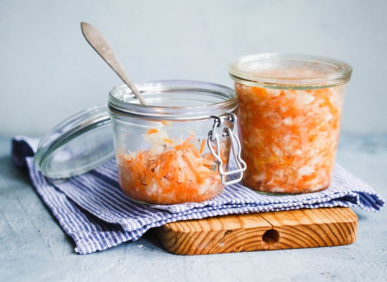

sauerkraut
Another way to pack your eating plan with a probiotic punch?
Snacking on sauerkraut. That's right, due to the fermentation process it undergoes, the beloved weiner
topping has some legit health benefits. Mainly: it's good for your gut. Adding the pro-bacteria food to
your diet can support weight loss in the long term

Special Salad
Salad greens contain Vitamin A, Vitamin C, beta-carotene,
calcium, folate, fiber, and phytonutrients.Leafy vegetables are a good choice for a
healthful diet because they do not contain cholesterol and are naturally low in calories and sodium.